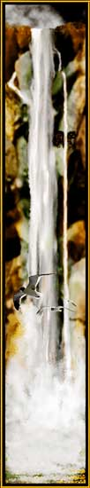

Waterfall. Watercolor, Airbrush. I'm entranced by waterfalls. So I painted one sized 8.5" X 44" and printed it out on banner paper. It now hangs in our home. Here is a copy reduced for the web.
Next
painting.
Return
to Gallery 2
Home